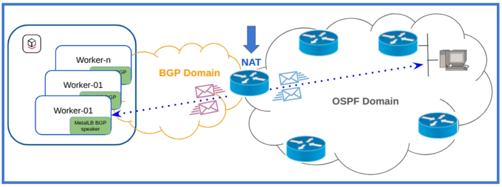
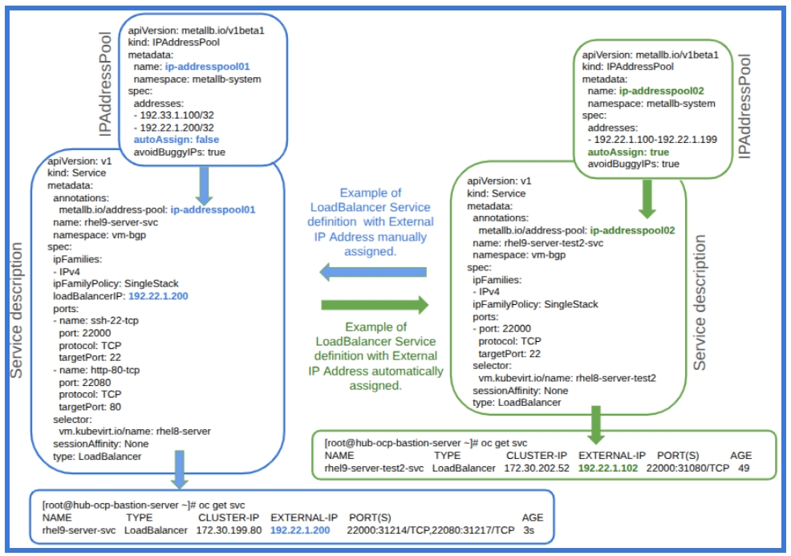

Implementing BGP Load Balancing infrastructure with MetalLB for OpenShift Virtualization
2. Architecture
2.1. MetalLB architecture in Layer 3 (BGP mode)
-
The MetalLB architecture in Layer 3 (BGP mode) relies on the FRR (FRRouting) suite to instantiate the BGP Speaker PODs in the designated nodes within Red Hat OpenShift Virtualization.
-
The objective of the MetalLB BGP Speakers is to advertise, to the external iBGP or eBGP peers (iBGP in this Proof Of Concept), the Network Layer Reachability Information (NLRI) related to the External IP addresses assigned to the LoadBalancer services.
Figure 3 - BGP Equal-Cost Multi-Path (ECMP)

-
The BGP Equal-Cost Multi-Path (ECMP) feature (Figure 3), which allows for the distribution of traffic across multiple equal-cost paths to the same destination, along with BGP’s failover capabilities, are critical components that enhance both the scalability and performance of a BGP solution.
-
Additionally, the reconvergence capabilities of routing protocols contribute significantly to the system resilience.
-
Bidirectional Forward Detection (BFD) plays a vital role in BGP performance by reducing the time required to detect network failures. BFD can identify failures within milliseconds, offering a substantial improvement over the standard keepalive timeout recommendations of 20 seconds specified in RFC 4271, with some third-party providers adopting longer timeouts such as 60 seconds.
-
The default configuration of the MetalLB BGP Speaker is to deny any Network Layer Reachability Information (NLRI) advertised by the BGP peers (external routers).
-
This posture presents a technical challenge regarding how to enable connectivity from internal endpoints behind the LoadBalancer services to remote subnets that are not directly connected to the Red Hat OpenShift Virtualization worker nodes.
-
The Network Address Translation (NAT) process implemented on the external router connected to the worker nodes of OpenShift Virtualization is one of the possible approaches for managing this type of network complexity (Figure 4) connected to the traditional Kubernetes networking where the MetalLB architecture in Layer 3 (BGP mode) speaker are involved.
-
An alternative approach for managing this complexity is available in this Red Hat blog post: Learning Kubernetes nodes networking routes via BGP
-
Implementing user-defined networks (UDNs) in Red Hat OpenShift Virtualization using Virtual Routing and Forwarding (VRF), advertising them via BGP with FRRouting speakers, and injecting learned BGP prefixes back into the VRF creates an adaptable solution that makes entire user-defined networks (UDNs) prefixes, not just LoadBalancer service IPs, directly reachable from the customers network infrastructure.
-
This topic, related to user-defined networks (UDNs) exposed via BGP routing protocol, is extensively discussed in this article: Exposing OpenShift networks using BGP
Figure 4 - Implementation of Network Address Translation to facilitate connectivity to remote subnets.

2.2. Administration of the MetalLB IPAddressPools and External IP Address advertisement via BGP
-
MetalLB can automatically allocate External IP addresses (IPv4 and IPv6), to OpenShift Virtualization services of type LoadBalancer, from any IP address pool where autoAssign is set to true (Figure 5).
-
MetalLB offers manual IP address assignment to enhance administrators' control over the allocation of external IP addresses for LoadBalancer services. Manual allocation of External IP Addresses (Figure 5) can be implemented by means of these configurations :
| Setting required for manual External IP allocation | Description |
|---|---|
|
Field to be added to the IPAddressPool’s spec planned for manual External IP allocation. The target of this field is preventing any automatic IP assignment from this pool. |
|
Annotation to be added to the OpenShift Virtualization Service and valorized with the name of the IPAddressPool planned as source for the manual External IP Allocation. |
|
Field to be added to the OpenShift Virtualization Service and valorized with the IP Address to be manually assigned to the service itself. |
-
The selection of the IP Address Pool (the source from which the External IP address will be assigned) can be influenced by other factors, as illustrated in this table:
| serviceAllocation fields | Description |
|---|---|
|
List of label selectors used to select specific namespace(s) for the IP pool. This serves as a flexible alternative to a static namespace list. |
|
A literal list of namespace(s) to which the IP pool can be attached. |
|
The priority assigned to the IP pool during the IP allocation process for a service. Higher priority pools are evaluated first. |
|
List of label selectors to select specific service(s) for which this IP pool can be used for IP allocation. |
Figure 5 - Service definition with some examples of manual and automatic External IP Address assignment.

-
The IPAddressPools must be included within the BGPAdvertisement object to enable the advertisement of Network Layer Reachability Information (NLRI), which consists of the Network Prefix and Prefix Length associated with external IP addresses assigned to LoadBalancer services.
-
The purpose of the BGPAdvertisement (Figure 6) is to establish a relationship between the IPAddressPools (specifically which External IP Addresses assigned will be advertised from each IPAddressPools) and the BGP peers (to which the External IP Addresses will be advertised) involved in the BGP sessions with the MetalLB speakers.
-
This configuration ensures that the External IP Addresses advertised as Network Layer Reachability Information to the BGP peers will be accessible from outside the OpenShift Virtualization cluster.
-
It is important to note that the Network Layer Reachability Information, connected to the External IP Addresses assigned to the LoadBalancer service, will only be advertised if at least one virtual machine is active and connected as an endpoint to the LoadBalancer service.
-
NLRI advertisement can be influenced by these BGAdvertisements fields:
| BGPAdvertisement fields | Description |
|---|---|
|
The aggregation-length advertisement option lets you “roll up” the /32s into a larger prefix. Defaults to 32. Works for IPv4 addresses. |
|
The aggregation-length advertisement option lets you “roll up” the /128s into a larger prefix. Defaults to 128. Works for IPv6 addresses. |
|
A selector for the IPAddressPools which would get advertised via this advertisement. If no IPAddressPool is selected by this or by the list, the advertisement is applied to all the IPAddressPools. |
|
The list of IPAddressPools to advertise via this advertisement, specifically selected by name. |
|
Allows limiting the nodes to announce as next hops for the LoadBalancer IP. When empty, all nodes in the cluster are announced as next hops. |
|
Limits the BGP peers to which the IPs of the selected pools are advertised. When empty, the LoadBalancer IP is announced to all configured BGPPeers. |
-
In a BGP network topology based on iBGP, where the local ASN matches the peer ASN (Figure 1), the behavior of the BGP protocol can be affected by both the BGP Peer configurations and the BFD Profile, as perceptible in the next two tables.
-
Please note that the BGPPeer Custom Resource (CR) contains the necessary information to establish a BGP session with a single peer.
-
To establish sessions with multiple external routers, it is necessary to define multiple BGPPeer CRs, as illustrated in Figure 6.
| Example of BGPPeer fields | Description |
|---|---|
|
The name of the BFD Profile to be used for the BFD session associated with the BGP session. If not set, the BFD session will not be established. |
|
Allows the BGP Peer to continue forwarding data packets along known routes while the routing protocol information is being restored. |
|
Requested BGP keepalive time, per RFC4271 (default: 60s). |
|
Requested BGP hold time, per RFC4271 (default: 180s). |
|
Requested BGP connect time; controls how long BGP waits between connection attempts to a neighbor (default: 120s). |
| Example of BFDProfile fields | Description |
|---|---|
|
The minimum interval (in milliseconds) that this system is capable of receiving control packets (default: 300ms). |
|
The minimum transmission interval (less jitter) that this system wants to use when sending BFD control packets (default: 300ms). |
|
Configures the detection multiplier to determine packet loss. The remote transmission interval is multiplied by this value to determine the connection loss detection timer (default: 3). |
|
Marks the session as passive. A passive session will not attempt to initiate the connection; it waits for control packets from a peer before it begins replying. |
Figure 6 - MetalLB in Layer 3 mode (BGB mode) - Object relationships and BGP speaker association with OpenShift Virtualization nodes.